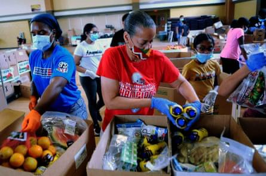

Food bridge was started as a powerful idea:that no one should go hungry while perfectly good food goes to waste wat started as alocal intiative to redistribute surplus food has grown into a community-driven movement bridging the gap between abundance and need food bride is creating sustainable, compassionate solutions to fight hunger-one meal at a time.
To fight hunger and reduce food waste by connecting surplus food with people in need hence creating sustainable change.
A world where no food is wasted and no one goes hungry because food is shared not wasted.
This represents care, unity and the power to create change. it shows that when we work together to nurture life, we can grow afuture free from hunger completely.
This shows hope and growth in the fight against food shortage.it reminds us that small actions like nurturing asingle plant can make abig difference
Every seed planted is a step towards aworld where everyone has enough to eat Everything we do passionatly looking forward to make a lasting impact towards hunger
We lead with empathy and care for every individual we serve.
We work towards long-term solutions that benefit people and the planet.
We believe in the power of community and patternships to drive impact
We operate transparently,honesty, and with respect for all stakeholders.
We embrace creative solutions and technology to fight hunger more effctively.